Notre travail propose de modéliser la dynamique spatio-temporelle de la densité agressive des principales espèces vectrice du paludisme avec des modèles de forêt aléatoire.
La question de recherche principale :
Questions annexes :
La variable que l’on va modéliser est la densité agressivité des espèce majeure d’Anophèles. Nous utilisons des données receuillies par capture sur sujet humain, sur deux zones d’études différentes (CI et BF), pendant environ 1.5 années.
Nous proposons d’étudier séparement les deux zones d’études pour chaque variable à modéliser car i) la densité agressive est significativement plus importante en CI qu’au BF et ii) certaines variables explicatives sont disponibles dans une zone mais pas dans l’autre. Ainsi il sera intéressant de tenter de comprendre ce qui explique les différences entre les deux zones.
La distribution statistique de chacune de ces variables à modéliser est donnée dans la section “Choix du modèle statistique pour l’analyse de nos données”. L’analyse de cette distribution permettra d’orienter le choix du modèle à utiliser pour modéliser chacune des variables.
La carte suivante présente la localisation des villages de l’étude dans les deux zones (BF = Burkina Faso ; CI = Côte d’Ivoire). Les villages sont représentés en fonction de la stratégie complémentaire de LAV implémentée dans chaque village (à noter que la méthodologie utilisée est un Essai randomisé contrôlé, ainsi, certains villages n’ont pas reçu de statégie de lutte complémentaire : il s’agit des villages “Contrôle”).
A titre d’exemple, le tableau ci-après donne les dates des missions entomologiques dans les deux zones d’étude et les captures totales d’Anophèles, et les figures qui suivent donnent la distribution du nombre de piqures par homme et par nuit (human biting rate, abbrégé ma), toutes espèces d’Anophèles confondues, sur les deux zones d’études, en fonction des différents traitements puis tous traitements confondus.
| codepays | nummission | date | ma |
|---|---|---|---|
| BF | 1 | 2017-01-23 | 282 |
| BF | 2 | 2017-03-25 | 290 |
| BF | 3 | 2017-05-20 | 1406 |
| BF | 4 | 2017-11-09 | 458 |
| BF | 5 | 2017-12-08 | 234 |
| BF | 6 | 2018-01-21 | 101 |
| BF | 7 | 2018-03-24 | 225 |
| CI | 1 | 2016-09-30 | 34233 |
| CI | 2 | 2016-11-27 | 3365 |
| CI | 3 | 2017-02-23 | 969 |
| CI | 4 | 2017-04-20 | 5647 |
| CI | 5 | 2017-10-27 | 9817 |
| CI | 6 | 2017-12-04 | 1325 |
| CI | 7 | 2018-01-25 | 168 |
| CI | 8 | 2018-03-24 | 2195 |
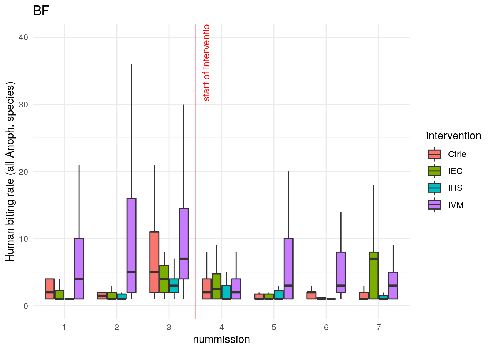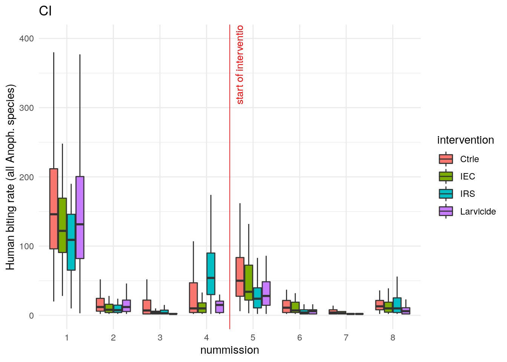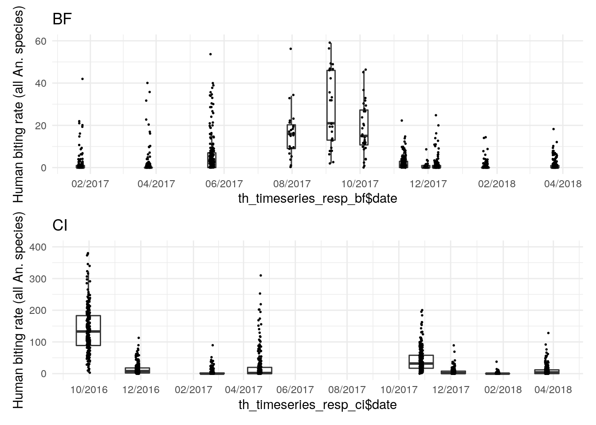
Les variables explicatives qui serviront dans les modèles mathématiques sont données dans le tableau suivant, avec les informations notamment sur les données sources utilisées et les pré-traitements effectués. Il s’agit principalement de variables climatiques (températures, précipitations, etc.), paysagères (occupation du sol), anthropiques et démographiques (population). Le tableau est aussi disponible à l’adresse suivante https://docs.google.com/spreadsheets/d/1dIeSOa2WinXvOQGLmIjA0gFdsHnb6zMMsDME-G5pyMc/edit?usp=sharing onglet “var_explication”.
Ces variables peuvent être séparées en 3 groupes :
Les variables spatialisées ont été extraites autour de chaque point de capture selon plusieurs zones tampon, afin de mesurer l’éventuelle influence de la variabilité spatiale de ces variables explicatives sur les variables à expliquer. Les rayons des zones tampon dépendent de la résolution spatiale des données sources. Ils vont de 20 mètres (pour les métriques paysagères calculées avec l’images SPOT6 à 1.5 m de résolution spatiale) à 2 km (distance maximum de vol dans la vie d’un moustique selon la bibliographie). Voir le tableau ci-dessous, colonne “buffer_size_extraction_m”, pour le détail des tailles de buffer utilisées pour chaque variable.
Les variables temporelles ont été extraites durant les 120 jours (4 mois) précédent la date de capture ou d’enquête épidémiologique, afin de mesurer l’éventuelle influence temporelle de ces variables explicatives sur les variables à expliquer (cela sera fait via la génération de cross correlation maps, cf. section plan d’analyse de données). Cette durée maximale de 120 jours a été utilisée dans d’autres études similaires. Elle permet de couvrir largement la durée de vie d’un vecteur (en général, maximum 1 mois) et de prendre en compte l’éventuelle influence des générations de vecteurs précédent. Notons que les données temporelles ont des résolutions temporelles (i.e. temps de revisite) variables selon les sources : cela va du quotidien (températures de MODIS, précipitations de GPM) au mensuel (lumières noctures) en passant par l’hebdomadaire (évapotranspiration ou indices de végétation de MODIS), la dizaines de jours (Sentinel-1), etc.
Ainsi, si n est le nombre de jours précédent la capture pour lesquels nous avons extrait les données temporelles (ici n = 120), r la résolution temporelle de la donnée source de la variable à extraire, et m le nombre de zones tampon pour une variable spatiale considérée :
Chacune des variables issues de ces trois groupes fera l’objet d’un pré-traitement spécifique dans la modélisation (cf. section plan d’analyse de données).
Par ailleurs, les variables ont aussi été regroupées suivant plusieurs ensembles fonctionnels :
A noter qu’une variable, pour un groupe donné, peut se retrouver dans plusieurs classes à la fois. La méthode d’évaluation de l’importance des variables permet de considérer ces cas.
L’importance des variables explicatives (i.e. leur influence sur la variable à expliquer) sera évaluée : - individuellement : imoportance de chaque variable prise individuellement - collectivement : importance relative des différents groupes de variables
| code | short_name | long_name | type_group1 | type_group2 | type_group3 | spatial_variable | time_dependent_variable | max_time_lag | temporal_aggregation_days | unit | buffer_size_extraction_m | date_source_code | data_source_long_name | data_source_doi | spatial_resolution_m | revisit_time | latency_days | data_prepation_lineage | comments | table_db |
|---|---|---|---|---|---|---|---|---|---|---|---|---|---|---|---|---|---|---|---|---|
| TMIN1 | Daily minimum temperature | Daily minimum land surface temperature | Temperature | Medium temporal dynamicity | emergence | Yes | Yes | 120 | 1 | celcius degrees | 500, 1000, 2000 | MOD11A1.006, MYD11A1.006 | MODIS/Terra Land Surface Temperature/Emissivity Daily L3 Global 1km SIN Grid V006, MODIS/Aqua Land Surface Temperature/Emissivity Daily L3 Global 1km SIN Grid V006 | https://dx.doi.org/10.5067/MODIS/MOD11A1.006 https://dx.doi.org/10.5067/MODIS/MYD11A1.006 | 1000 | 1 | 2 |
|
NA | env_timeseries |
| TMAX1 | Daily maximum temperature | Daily maximum land surface temperature | Temperature | Medium temporal dynamicity | emergence | Yes | Yes | 120 | 1 | celcius degrees | 500, 1000, 2000 | MOD11A1.006, MYD11A1.006 | MODIS/Terra Land Surface Temperature/Emissivity Daily L3 Global 1km SIN Grid V006, MODIS/Aqua Land Surface Temperature/Emissivity Daily L3 Global 1km SIN Grid V006 | https://dx.doi.org/10.5067/MODIS/MOD11A1.006 https://dx.doi.org/10.5067/MODIS/MYD11A1.006 | 1000 | 1 | 2 | Same as for TMIN1 but with the LST_Day_1km band and keeping the highest value available value for each pixel. | NA | env_timeseries |
| TAMP1 | Daily temperature amplitude | Daily temperature amplitude | Temperature | Medium temporal dynamicity | emergence | Yes | Yes | 120 | 1 | celcius degrees | 500, 1000, 2000 | MOD11A1.006, MYD11A1.006 | MODIS/Terra Land Surface Temperature/Emissivity Daily L3 Global 1km SIN Grid V006, MODIS/Aqua Land Surface Temperature/Emissivity Daily L3 Global 1km SIN Grid V006 | https://dx.doi.org/10.5067/MODIS/MOD11A1.006 https://dx.doi.org/10.5067/MODIS/MYD11A1.006 | 1000 | 1 | 2 | Compute the difference between final TMAX1 and TMIN1 datasets. | NA | env_timeseries |
| VNV8 | NDVI - 250 m | Average 8-days Normalized Difference Vegetation Index (250 m) | Land cover | Medium temporal dynamicity | emergence+dispersion | Yes | Yes | 120 | 8 | unitless | 500, 1000, 2000 | MOD13Q1.006, MYD13Q1.006 | MODIS/Terra Vegetation Indices 16-Day L3 Global 250m SIN Grid V006 MODIS/Aqua Vegetation Indices 16-Day L3 Global 250m SIN Grid V006 | https://dx.doi.org/10.5067/MODIS/MOD13Q1.006 https://dx.doi.org/10.5067/MODIS/MYD13Q1.006 | 250 | 8 | 20 |
|
The MODIS Vegetation products are produced over a 16 days time frame, hence there are very few missing values in the raw products. In addition, Terra and Aqua Vegetation products are phased, enabling to have a 8-days temporal resolution. | env_timeseries |
| VEV8 | EVI - 250 m | Average 8-days Enhanced Vegetation Index (250 m) | Land cover | Medium temporal dynamicity | emergence+dispersion | Yes | Yes | 120 | 8 | unitless | 500, 1000, 2000 | MOD13Q1.006, MYD13Q1.006 | MODIS/Terra Vegetation Indices 16-Day L3 Global 250m SIN Grid V006 MODIS/Aqua Vegetation Indices 16-Day L3 Global 250m SIN Grid V006 | https://dx.doi.org/10.5067/MODIS/MOD13Q1.006 https://dx.doi.org/10.5067/MODIS/MYD13Q1.006 | 250 | 8 | 20 | Same as for VNV8 but with the _250m_16_days_EVI band. | The MODIS Vegetation products are produced over a 16 days time frame, hence there are very few missing values in the raw products. In addition, Terra and Aqua Vegetation products are phased, enabling to have a 8-days temporal resolution. | env_timeseries |
| EVT8 | Evapotranspiration | Average 8-days evapotranspiration | Moisture proxy | Medium temporal dynamicity | emergence | Yes | Yes | 120 | 8 | kg/m�/8day | 500, 1000, 2000 | MOD16A2.006, MYD16A2.006 | MODIS/Terra Net Evapotranspiration 8-Day L4 Global 500m SIN Grid V006 MODIS/Aqua Net Evapotranspiration 8-Day L4 Global 500m SIN Grid V006 | https://dx.doi.org/10.5067/MODIS/MOD16A2.006 https://dx.doi.org/10.5067/MODIS/MYD16A2.006 | 500 | 8 | 20 |
|
The MODIS Evapotranspiration products are produced over a 8 days time frame, but are not phased (unlike MODIS Vegetation). This is the reason why we combine Terra and Aqua products to produce the final dataset. | env_timeseries |
| SMO1 | Soil moisture | Daily soil moisture | Moisture proxy | Medium temporal dynamicity | emergence | Yes | Yes | 120 | 1 | mm3/mm3 | 500, 1000, 2000 | SPL3SMP_E.003 | SMAP Enhanced L3 Radiometer Global Daily 9 km EASE-Grid Soil Moisture, Version 3 | https://doi.org/10.5067/T90W6VRLCBHI | 9000 | 2/3 | 1 |
|
NA | env_timeseries |
| RFD1_F | Rainfall | Daily total precipitation (research quality data) | Moisture proxy | Medium temporal dynamicity | emergence | Yes | Yes | 120 | 1 | mm | 500, 1000, 2000 | GPM_3IMERGDF.06 | GPM IMERG Final Precipitation L3 1 day 0.1 degree x 0.1 degree V06 | https://doi.org/10.5067/GPM/IMERGDF/DAY/06 | 10000 resampled to 250 | 1 | 1 | NA | NA | env_timeseries |
| VNV30 | NDVI - 10 m | Average monthly Normalized Difference Vegetation Index (10 m) | Land cover | Medium temporal dynamicity | emergence+dispersion | Yes | Yes | 120 | 30 | unitless | 100, 250, 500, 500, 1000, 2000 | Sentinel-2 | Copernicus Sentinel-2 Data | Contains modified Copernicus Sentinel data 2020 for Sentinel data | 10 | 5 | 0 |
|
NA | env_timeseries |
| VMV30 | MNDVI - 10 m | Average monthly Modified Normalized Difference Vegetation Index | Land cover | Medium temporal dynamicity | emergence+dispersion | Yes | Yes | 120 | 30 | unitless | 100, 250, 500, 500, 1000, 2000 | Sentinel-2 | Copernicus Sentinel-2 Data | Contains modified Copernicus Sentinel data 2020 for Sentinel data | 10 | 5 | 0 | Same as for VNV30 | NA | env_timeseries |
| WNW30 | NDWI - 10 m | Average monthly Normalized Difference Water Index | Land cover | Medium temporal dynamicity | emergence | Yes | Yes | 120 | 30 | unitless | 100, 250, 500, 500, 1000, 2000 | Sentinel-2 | Copernicus Sentinel-2 Data | Contains modified Copernicus Sentinel data 2020 for Sentinel data | 10 | 5 | 0 | Same as for VNV30 | NA | env_timeseries |
| BRI30 | BRI - 10 m | Average monthly Brillance Index | Land cover | Medium temporal dynamicity | dispersion+resistence | Yes | Yes | 120 | 30 | unitless | 100, 250, 500, 500, 1000, 2000 | Sentinel-2 | Copernicus Sentinel-2 Data | Contains modified Copernicus Sentinel data 2020 for Sentinel data | 10 | 5 | 0 | Same as for VNV30 | NA | env_timeseries |
| WVV10 | VV - 10 m | Average 10-days VV band | Land cover | Medium temporal dynamicity | emergence | Yes | Yes | 120 | 10 | NA | 100, 250, 500, 500, 1000, 2000 | Sentinel-1 | Copernicus Sentinel-1 Data | Contains modified Copernicus Sentinel data 2020 for Sentinel data | 10 | 10 | 0 | NA | NA | env_timeseries |
| WVH10 | VH - 10 m | Average 10-days VH band | Land cover | Medium temporal dynamicity | emergence | Yes | Yes | 120 | 10 | NA | 100, 250, 500, 500, 1000, 2000 | Sentinel-1 | Copernicus Sentinel-1 Data | Contains modified Copernicus Sentinel data 2020 for Sentinel data | 10 | 10 | 0 | NA | NA | env_timeseries |
| LIG30 | Nightly radiance | Average monthly nightly radiance | Lights | Medium temporal dynamicity | activity | Yes | Yes | 120 | 30 | NanoWatt/cm2/sr | 500, 1000, 2000 | VIIRS_DNB_MONTH | Visible Infrared Imaging Radiometer Suite (VIIRS) Day/Night Band (DNB) | https://doi.org/10.5067/VIIRS/VNP46A1.001 | 30 | 30 | 30 |
|
NA | env_timeseries |
| DTL7 | Daytime length | Weekly daytime length | Daytime length | Medium temporal dynamicity | emergence | No | Yes | 120 | 7 | hours | NA | geosphere | geosphere R package | https://CRAN.R-project.org/package=geosphere | NA | 1 | NA | Get the daylength at the sampling point location using the R package ‘geosphere’ | NA | env_timeseries |
| RFH | Rainfall during the night of catch | Proportion of half-hours with positive precipitation for the whole duration of the HLC | Rainfall | Short temporal dynamicity | activity | No | No | NA | NA | % | NA | GPM_3IMERGDHH.06 | GPM IMERG Final Precipitation L3 Half Hourly 0.1 degree x 0.1 degree V06 | https://doi.org/10.5067/GPM/IMERG/3B-HH/06 | 10000 resampled to 250 | 0.02 | NA |
|
NA | env_nightcatch |
| WDR | Wind direction during the night of catch | Mean wind direction during the night of catch | Wind | Short temporal dynamicity | activity | No | No | NA | NA | degrees (0 to 360) | NA | ERA5 | ERA5 hourly data on single levels from 1979 to present | https://doi.org/10.24381/cds.adbb2d47 | 27000 | 0.04 | NA |
|
NA | env_nightcatch |
| WSP | Wind speed during the night of catch | Mean wind speed direction during the night of catch | Wind | Short temporal dynamicity | activity | No | No | NA | NA | m/s | NA | ERA5 | ERA5 hourly data on single levels from 1979 to present | https://doi.org/10.24381/cds.adbb2d47 | 27000 resampled to 250 | 0.04 | NA | See WDR | NA | env_nightcatch |
| NMT | Temperature during the night of catch | Mean temperature during the night of catch | Temperature | Short temporal dynamicity | activity | No | No | NA | NA | NA | NA | REACT database | database of the REACT project | NA | NA | NA | NA | NA | NA | env_nightcatch |
| NML | Luminosity during the night of catch | Mean luminosity during the night of catch | Lights | Short temporal dynamicity | activity | No | No | NA | NA | NA | NA | REACT database | database of the REACT project | NA | NA | NA | NA | NA | NA | env_nightcatch |
| NMH | Humidity during the night of catch | Mean humidity during the night of catch | Humidity | Short temporal dynamicity | activity | No | No | NA | NA | NA | NA | REACT database | database of the REACT project | NA | NA | NA | NA | NA | NA | env_nightcatch |
| NMA | Atmoshperic pressure during the night of catch | Mean atmospheric pressure during the night of catch | Atmospheric pressure | Short temporal dynamicity | activity | No | No | NA | NA | NA | NA | REACT database | database of the REACT project | NA | NA | NA | NA | NA | NA | env_nightcatch |
| LMN | Apparent magnitude of the Moon | Apparent magnitude of the Moon | Lights | Short temporal dynamicity | activity | No | No | NA | NA | unitless | NA | MIRIADE | The Virtual Observatory Solar System Object Ephemeris Generator | NA | NA | 1 | NA |
|
NA | env_nightcatch |
| TEL | Elevation | Average elevation | Topography | Long or nonexistent temporal dynamicity | NA | Yes | No | NA | NA | meters above the see | 500, 1000, 2000 | SRTMGL1.003 | Digital Elevation Model from the NASA Shuttle Radar Topography Mission Global 1 arc second | https://dx.doi.org/10.5067/MEASURES/SRTM/SRTMGL1.003 | 30 | NA | NA |
|
NA | env_staticbuffer |
| TSL | Slope | Average slope | Topography | Long or nonexistent temporal dynamicity | emergence | Yes | No | NA | NA | % | 500, 1000, 2000 | SRTMGL1.003 | Digital Elevation Model from the NASA Shuttle Radar Topography Mission Global 1 arc second | https://dx.doi.org/10.5067/MEASURES/SRTM/SRTMGL1.003 | 30 | NA | NA | See TEL | NA | env_staticbuffer |
| TAS | Aspect | Average aspect | Topography | Long or nonexistent temporal dynamicity | emergence | Yes | No | NA | NA | NA | 500, 1000, 2000 | SRTMGL1.003 | Digital Elevation Model from the NASA Shuttle Radar Topography Mission Global 1 arc second | https://dx.doi.org/10.5067/MEASURES/SRTM/SRTMGL1.003 | 30 | NA | NA | See TEL | NA | env_staticbuffer |
| TCI | Terrain Classification Index | Average Terrain Classification Index | Topography | Long or nonexistent temporal dynamicity | emergence | Yes | No | NA | NA | unitless | 500, 1000, 2000 | SRTMGL1.003 | Digital Elevation Model from the NASA Shuttle Radar Topography Mission Global 1 arc second | https://dx.doi.org/10.5067/MEASURES/SRTM/SRTMGL1.003 | 30 | NA | NA | See TEL | NA | env_staticbuffer |
| TWI | Topographic Wetness Index | Average Topographic Wetness Index | Topography | Long or nonexistent temporal dynamicity | emergence | Yes | No | NA | NA | unitless | 500, 1000, 2000 | SRTMGL1.003 | Digital Elevation Model from the NASA Shuttle Radar Topography Mission Global 1 arc second | https://dx.doi.org/10.5067/MEASURES/SRTM/SRTMGL1.003 | 30 | NA | NA | See TEL | NA | env_staticbuffer |
| WAC | Accumulation | Average accumulation | Moisture proxy | Long or nonexistent temporal dynamicity | emergence | Yes | No | NA | NA | ha | 500, 1000, 2000 | SRTMGL1.003 | Digital Elevation Model from the NASA Shuttle Radar Topography Mission Global 1 arc second | https://dx.doi.org/10.5067/MEASURES/SRTM/SRTMGL1.003 | 30 | NA | NA | See TEL | NA | env_staticbuffer |
| WAD | Distance to hydrographic network | Average distance to hydrographic network | Moisture proxy | Long or nonexistent temporal dynamicity | emergence | Yes | No | NA | NA | m | 500, 1000, 2000 | SRTMGL1.003 | Digital Elevation Model from the NASA Shuttle Radar Topography Mission Global 1 arc second | https://dx.doi.org/10.5067/MEASURES/SRTM/SRTMGL1.003 | NA | NA | NA |
|
NA | env_staticbuffer |
| WMD | Shortest distance to hydrographic network | Shortest distance to theoretical hydrographic network | Moisture proxy | Long or nonexistent temporal dynamicity | emergence | No | No | NA | NA | m | 500, 1000, 2000 | SRTMGL1.003 | Digital Elevation Model from the NASA Shuttle Radar Topography Mission Global 1 arc second | https://dx.doi.org/10.5067/MEASURES/SRTM/SRTMGL1.003 | NA | NA | NA | See WAD | NA | env_staticnobuffer |
| WLS | Length of the hydrographic network | Total length of the hydrographic network | Moisture proxy | Long or nonexistent temporal dynamicity | emergence | Yes | No | NA | NA | m | 500, 1000, 2000 | SRTMGL1.003 | Digital Elevation Model from the NASA Shuttle Radar Topography Mission Global 1 arc second | https://dx.doi.org/10.5067/MEASURES/SRTM/SRTMGL1.003 | NA | NA | NA | See WAD | NA | env_staticbuffer |
| WAL | Accumulation / distance to sampling point | Ratio between the accumulation and the distance to sampling point | Moisture proxy | Long or nonexistent temporal dynamicity | emergence | Yes | No | NA | NA | ha/m | 500, 1000, 2000 | SRTMGL1.003 | Digital Elevation Model from the NASA Shuttle Radar Topography Mission Global 1 arc second | https://dx.doi.org/10.5067/MEASURES/SRTM/SRTMGL1.003 | NA | NA | NA | See WAD | NA | env_staticbuffer |
| POP | Human population | Total human population (census/ground data) | Hosts | Long or nonexistent temporal dynamicity | reproduction | Yes | No | NA | NA | person | 100, 500 | REACT database | database of the REACT project | NA | household | NA | NA |
|
NA | env_staticbuffer |
| BDE | Distance to the edge of the village | Distance to the nearest edge of the village | Land cover | Long or nonexistent temporal dynamicity | dispersion | No | No | NA | NA | m | NA | REACT database | database of the REACT project | NA | NA | NA | NA |
|
NA | env_staticnobuffer |
| BCH | Degree of clustering of the households in the village | Degree of clustering or ordering of the households | Land cover | Long or nonexistent temporal dynamicity | dispersion | No | No | NA | NA | NA | NA | REACT database | database of the REACT project | NA | NA | NA | NA |
|
NA | env_staticbuffer |
| HYS | Proportion of hydromorphic soils | Proportion of hydromorphic soils | Moisture proxy | Long or nonexistent temporal dynamicity | emergence | Yes | No | NA | NA | % | 100, 250, 500, 500, 1000, 2000 | IRD | Ressources en sols : carte à 1:500 000 des unités agronomiques déduites de la carte pédologique : ouest sud. (IN) Notice des cartes de ressources en sols de la Haute Volta Korhogo : carte des segments pédologiques. (IN) Etude pédologique de la région de Boundiali - Korhogo (Côte-d’Ivoire) : cartographie et typologie sommaire des sols : feuille Boundiali, feuille Korhogo à 1/200.000 | http://sphaera.cartographie.ird.fr/carte.php?num=2257&pays=BURKINA+FASO&iso=BFA http://sphaera.cartographie.ird.fr/carte.php?num=942&pays=COTE+D%2527IVOIRE&iso=CIV | NA | NA | NA |
|
NA | env_staticbuffer |
| VCP | Vector control measure | Implementation of complementary vector control measures (other than LLIN) | Vector control | Vector control measures | longevity+resistence | No | No | NA | NA | 1 = presence ; 0 = absence | NA | REACT database | database of the REACT project | NA | NA | NA | NA |
|
NA | env_staticnobuffer |
| VCM | Vector control measure type | Vector control measure type (LLIN / IRS / anti-larval fighting / communication strategies) | Vector control | Vector control measures | longevity+resistence | No | No | NA | NA | NA | NA | REACT database | database of the REACT project | NA | NA | NA | NA | NA | NA | env_staticnobuffer |
| VCT | Time since introduction of vector control measures | Numer of days since introduction of vector control measures (to study rebounding residual transmission, cf kileen) | Vector control | Vector control measures | longevity+resistence | No | No | NA | NA | number of days after the start of the intervention | NA | REACT database | database of the REACT project | NA | NA | NA | NA | NA | NA | env_staticnobuffer |
| IEH | Household interior / exterior | Interior or exterior of the household | Exophagy | Long or nonexistent temporal dynamicity | dispersion+resistence | No | No | NA | NA | NA | NA | REACT database | database of the REACT project | NA | NA | NA | NA | NA | NA | NA |
| LED | Land cover - edge density | Cumulated length of each land cover class perimeter (class level) | Land cover | Long or nonexistent temporal dynamicity | emergence+dispersion+activity | Yes | No | NA | NA | various units depending on the metric | 20, 50, 100, 250, 500, 500, 1000, 2000 | REACT database | database of the REACT project | NA | NA | NA | NA | NA | NA | env_lsm |
| LNP | Land cover - number of patches | Number of patches for each land cover class (class level) | Land cover | Long or nonexistent temporal dynamicity | emergence+dispersion+activity | Yes | No | NA | NA | various units depending on the metric | 20, 50, 100, 250, 500, 500, 1000, 2000 | REACT database | database of the REACT project | NA | NA | NA | NA | NA | NA | env_lsm |
| LPL | Land cover - percentage of landscape | Proportion of the total surface occupied by each land cover class (class level) | Land cover | Long or nonexistent temporal dynamicity | emergence+dispersion+activity | Yes | No | NA | NA | various units depending on the metric | 20, 50, 100, 250, 500, 500, 1000, 2000 | REACT database | database of the REACT project | NA | NA | NA | NA | NA | NA | env_lsm |
| LRD | Land cover - patch richness density | Number of different land cover classes (landscape level) | Land cover | Long or nonexistent temporal dynamicity | emergence+dispersion+activity | Yes | No | NA | NA | various units depending on the metric | 20, 50, 100, 250, 500, 500, 1000, 2000 | REACT database | database of the REACT project | NA | NA | NA | NA | NA | NA | env_lsm |
| LSD | Land cover - shannon’s diversity index | Shannon’s diversity (landscape level) | Land cover | Long or nonexistent temporal dynamicity | emergence+dispersion+activity | Yes | No | NA | NA | various units depending on the metric | 20, 50, 100, 250, 500, 500, 1000, 2000 | REACT database | database of the REACT project | NA | NA | NA | NA | NA | NA | env_lsm |
| LSE | Land cover - simspon’s evenness index | Simspon’s diversity (landscape level) | Land cover | Long or nonexistent temporal dynamicity | emergence+dispersion+activity | Yes | No | NA | NA | various units depending on the metric | 20, 50, 100, 250, 500, 500, 1000, 2000 | REACT database | database of the REACT project | NA | NA | NA | NA | NA | NA | env_lsm |
outline :
modèles linéaires (modélisation traditionnelle) :
Aussi, au regard de i) le nombre et la diversité des variables explicatives que nous avons et ii) la forte probabilité d’existence de relations non linéaires entre nos variables (refs), nous pouvons réflechir à utiliser d’autres modèles pour analyser ces données.
Les modèles algorithmiques sont reconnus pour être performants dans le cadre de l’analyse de données “hautement” dimensionnelles (“high-dimensional data”) car i) ils sont non-paramétriques et ne nécéssitent ainsi à pirori pas de préparation particulière (transformations, etc.) des variables explicatives et ii) ils captent bien les relations non-linéaires entre les variables. Ces modèles sont donc de bons candidats pour l’analyse de nos données. Cependant, bien que plus flexibles que les modèles statistiques classiques, ils comportent aussi des hypothèses à respecter et des limites, par exemple pour les algorithmes basés sur les arbres décisionnels :
La figure suivante présente l’histrogramme du nombre de piqures / homme / nuit et par zone d’étude (tous espèces d’Anopheles confondues)
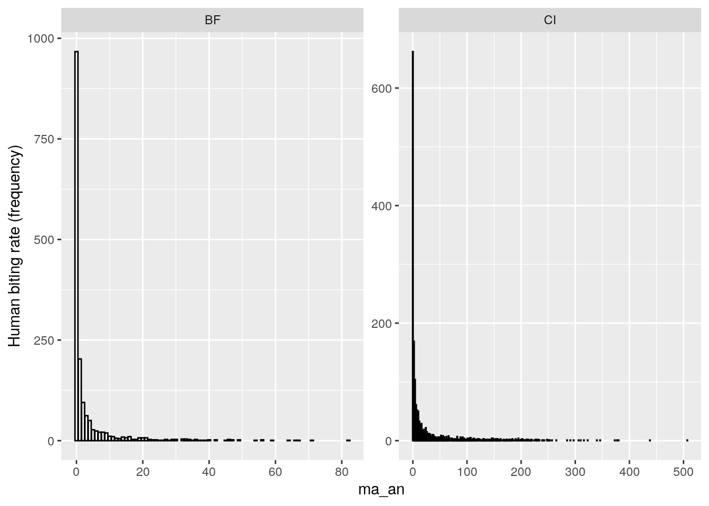
Si l’on stratifie par espèce majeure d’Anopheles, les distributions statistiques ont la forme suivante :
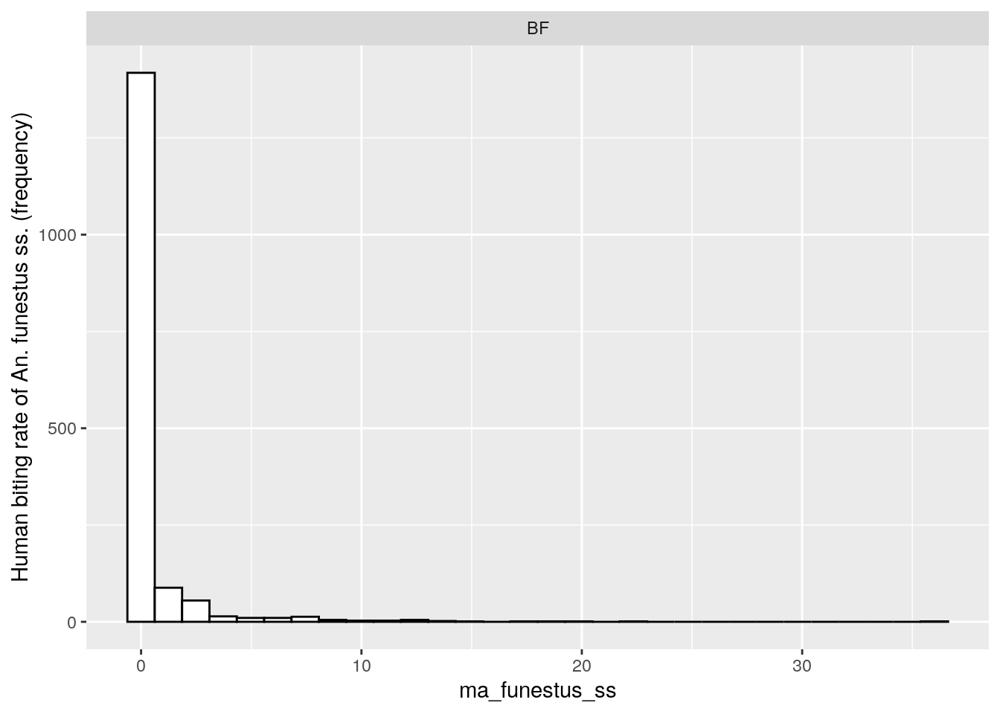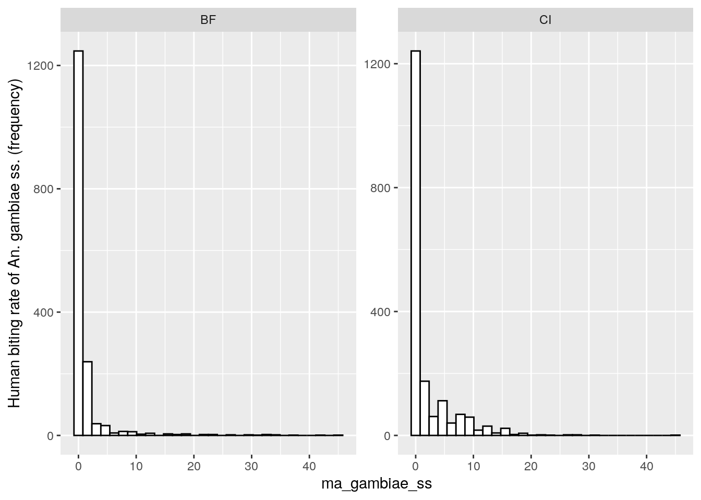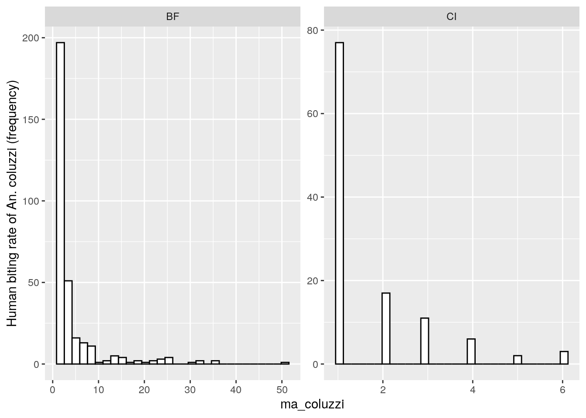
Nous avons donc à faire, dans tous ces cas, à une distribution binomiale négative avec excès de zéros. En modélisation statistique traditionnelle, ces types de distributions sont souvent analysées avec des modèles paramétriques de régression type «Zero Inflated Negative Binomial » (ZINB) ou modèles de haie (hurdle model) (https://stats.stackexchange.com/questions/81457/what-is-the-difference-between-zero-inflated-and-hurdle-models). Ces modèles sont largement reconnus par la communauté scientifique et ont été utilisés à de maintes reprises pour modéliser des compte de piqures (aggréssivité) de vecteurs (refs).
Nous proposons ici d’utiliser un modèle algorithmique - le modèle Random Forest - pour modéliser les données d’aggressivité des moustiques et de prévalence du paludisme, à la fois pour la prédiction et pour l’explication. Ces modèles algorithmiques sont reconnus pour être performants dans le cadre de l’analyse de données “hautement” dimensionnelles (“high-dimensional data”) car i) ils ne nécéssitent pas de préparation particulière (transformations, etc.) des variables explicatives et ii) ils captent bien les relations non-linéaires entre les variables.
Plusieurs essais de modélisation seront effectués afin d’identifier le meilleur modèle. Nous élaborerons par ailleurs une séléction supervisée des variables explicatives à intégrer dans les modèles afin de respecter les conditions d’intérprétabilité des modèles (principalement absence de colinéarité). Enfin, plusieurs indicateurs - complémentaires - relatifs à l’importance des variables seront extraits pour tenter d’intérprêter les modèles et comprendre les facteurs qui expliquent l’abondance des vecteurs par espèce majeures.
Nous proposons le plan d’analyse suivant pour analyser la série statistique d’aggréssivité des vecteurs :
Comme dans un modèle de haie, séparer les données à modéliser en 2 catégories : les comptes nuls et les comptes positifs. Cette séparation présente l’avantage, comme pour les modèles de haie, de séparer l’analyse des processus conduisant à la présence des vecteurs de celle conduisant à leur abondance (hypothèse réaliste, cf. thèse N Moiroux). Certains travaux qui ont utilisé des Random Forest pour traiter des séries statistiques binomiales négative avec excès de 0 proposent par ailleurs de procéder de cette manière (ref : https://www.researchgate.net/publication/337492179_Random_forests_for_homogeneous_and_non-homogeneous_Poisson_processes_with_excess_zeros). D’autres travaux ont modélisé des séries statistiques binomiales négatives zero-inflated avec des random forest en utilisant des méthodes diverses, soit d’adaptation des données (“data level methods”), soit d’adaptation des modèles (“Algorithm-level methods”) (e.g. https://www.biorxiv.org/content/10.1101/642728v1.full.pdf), soit hybrides (“Hybrid methods”). Chaque catégorie sera donc modélisée séparement. Le graphique suivant présente alors les deux nouvelles séries statistiques à modéliser pour l’aggressivité des vecteurs (toutes espèces confondues, puis par espèce majeure):
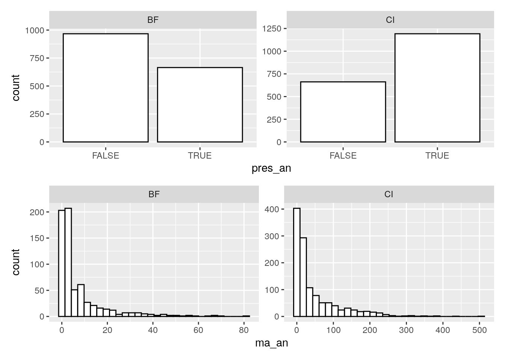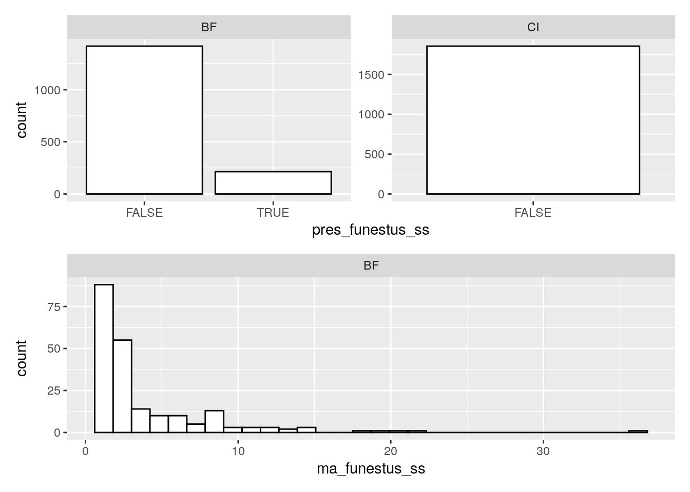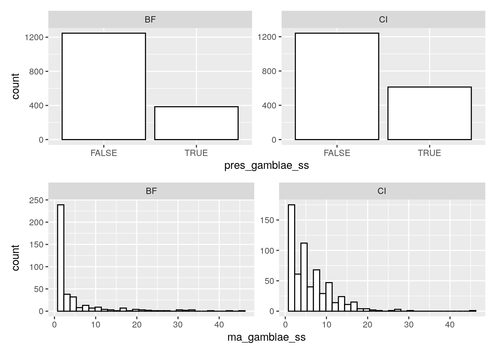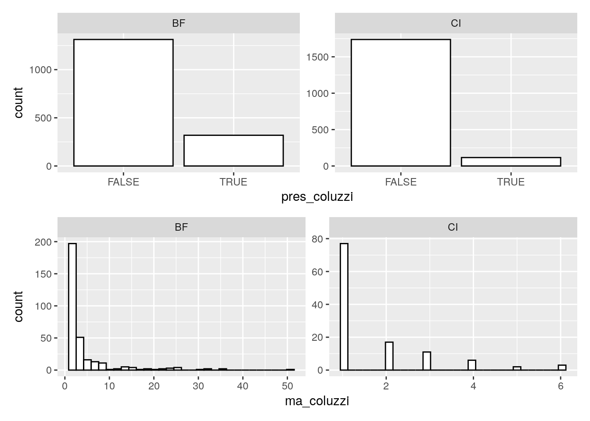
On voit que les séries statistiques “Présence / absence” sont souvent déséquilibrées (“imbalanced”), à savoir, la classe ‘FALSE’ (absence) est largement majoritaire sur la classe ‘TRUE’ (présence). Ce déséquilibre est problématique dans le cas des RF, qui va favoriser classe majoritaire (refs). Nous allons donc, pour ces séries, utiliser des méthodes de réechantillonage pour équilibrer les classes (ce que Krawczyk appelle une “data level method” dans ref). Nous allons réechantilloner les données selon 2 méthodes différentes : SMOTE (ref) et ROSE (ref). Le réeachantillonage sera effectué en amont de la séléction supervisée des variables explicatives.
La série statistique “Comptes positifs” suit, quand à elle, une distribution binomiale négative (sans excès de zéro toutefois). A priori, une telle distribution ne pose pas de problèmes dans le cas d’un RF, mais la littérature propose des manières d’améliorer potentiellement la qualité des modèles dans le cas de distributions asymétriques comme celles-ci. Nous proposons donc d’analyser cette distribution de trois manières différentes :
Par exemple, les figures ci-dessous donnent les histogrammes des classes à analyser dans le cadre de la 3è méthode (pour la variable Agressivité des anophèles, toutes espèces confondues):
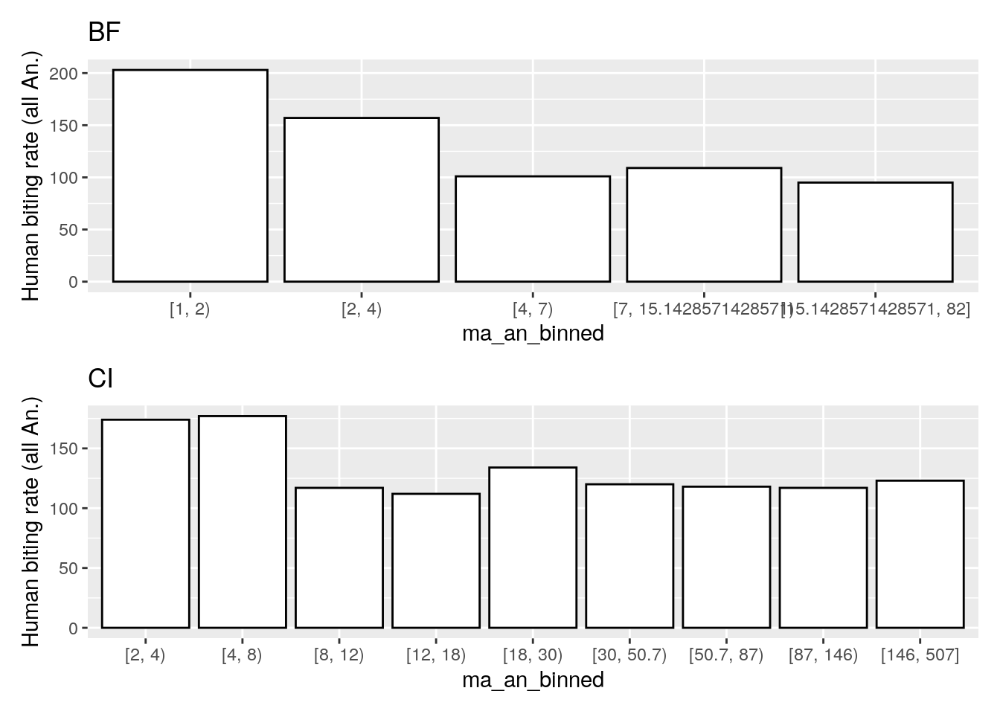
Ainsi, au total 2 modèles de présence / absence (1 par méthode de réechantillonage) et 3 modèles d’abondance seront donc établis pour chacune des 3 espèces majeures dans chaque zone d’étude. Les modèles seront comparés selon les indices de qualités présentés dans la section Evaluation de la qualité des modèles et séléction du meilleur modèle, et le modèle présentant la meilleure qualité pour chaque variable étudiée sera retenu pour la suite des travaux.
Si la qualité prédictive des RF n’est pas affectée par la présence de variables explicatives colinéaires, la capacité explicative, elle, l’est grandement (refs). Les méthodes de calcul de l’importance des variables, comme pour beaucoup de modèles, délivrent des résultats qui ne sont pas intérpêtables en présence de variables colinéaires.
Nous allons donc effectuer une série de pré-traitements pour séléctionner les variables explicatives à inclure dans les modèles.
Nous générerons dans un premier temps des cross-correlation maps (CCM) (ref) pour chaque couple {variable explicative, zone tampon}. Pour un lag de temps minimal et un lag maximal fixés ainsi qu’une fonction imposée (par exemple la moyenne ou la somme) les CCM déterminent les deux lags entre lesquels la fonction a la plus forte corrélation avec la variable étudiée. Dans notre cas, les CCM donneront la valeur du coefficient de correlation de Spearman (resp. p-value issue d’un test de Kruskall-Wallis) entre la série statistique de captures positives (resp. série statistique de présence / absence) et les variables temporelles (précipitations, températures, etc.). Nous avons choisi 120 jours comme lag maximal. Le coefficient de Spearman a été préféré au coefficient de Pearson au regard de la distribution asymétrique des données. Pour chaque variable explicative nous conserverons pour les étapes suivantes la série statistique la plus significativement corrélée (seuil p-value à 0.05).
Exemple : la figure suivante donne la CCM pour la série “abondance tous Anopheles confondus” et la variable “précipitations quotidiennes” (il manque les légendes):
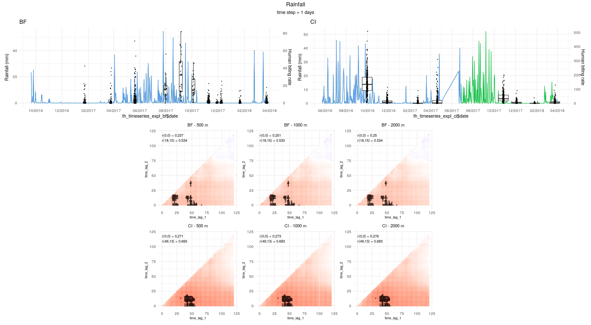
Nous allons donc conserver, pour cette combinaison {variable explicative, variable à expliquer}, la somme des précipitations entre 15 et 18 jours avant la capture pour le BF (13 et 49 pour la CI) dans un rayon de 2000 mètres (meilleure corrélation parmi les 3 rayons de zone tampon envisagée) autour de point de capture pour les deux aires d’intérêt.
Nous calculerons le coefficient de corrélation de Spearman (resp. p-values issues des tests de Kruskall-Wallis) entre la variable à expliquer et chaque couple {variable explicative, zone tampon}. Pour chaque variable explicative nous conserverons pour les étapes suivantes la série statistique la plus significativement corrélée (seuil p-value à 0.05).
Nous conserverons les variables significativement correlées avec la variable à expliquer (p-values des tests de Kruskall-Wallis et des coefficients de corrélation de Spearman).
Une fois ces travaux effectuées pour chaque groupe de variables, nous testerons la multicolinéarité des variables pré-séléctionnées de la manière suivante :
“A way to identify if a feature, x, is dependent on other features is to train a model using x as a dependent variable and all other features as independent variables (this is called Multicollinearity). Because random forests give us an easy out of bag error estimate, the feature dependence functions in rfpimp rely on random forest models. The R^2 prediction error from the model indicates how easy it is to predict feature x using the other features. The higher the score, the more dependent feature x is. The feature importance of non-x features predicting x give an indication of which features have predictive power for feature x” (from https://explained.ai/rf-importance/)
Les variables à expliquer ainsi séléctionnées seront alors non colinéaires et l’évaluation des variables d’importance sera crédible.
Nous diviserons chaque jeu de données en 2 lots : entrainement (80% des observations) et test (20%). Le jeu de données de validation, qui sert normalement à affiner le modèle, n’est pas nécéssaire pour un RF car la validation est inhérente au processus des RF (via les out-of-bag). Pour les modèles de regression (comptes positifs) nous diviserons en déciles les données de compte et nous conserverons 20% des observations par décile (choisies aléatoirement dans chaque décile) pour le jeu de données test. Pour les modèles de classification (données de présence/absence et modèles de comptes positifs par classes) nous conserverons 20% des observations par classe (choisies aléatoirement dans chaque classe) pour le jeu de données test.
Chaque modèle sera affiné (fine-tuned) en cherchant le meilleur RMSD pour les modèles de regressions, indice kappa/accuracy pour les modèles de classification (avec la procédure interne de validation du RF basé sur les out-of-bag observations).
La qualité des modèles sera évaluée avec des diagrammes de Taylor et, pour chaque série statistique, le modèle présentant le meilleur trade-off entre RMSD, écart type et coefficient de corrélation sera séléctionné pour l’évaluation des variables d’importance. Cf explication ci-dessous, extrait de (https://www.biorxiv.org/content/10.1101/642728v1.full.pdf) :
A modified Taylor diagramis used to graphically summarize the test results. This diagram showsthree statistics in a single plot: the standard deviation, theroot-mean-squared deviation (RMSD), and Pearson’s correlation coefficient.T aylor diagrams represent the relationship between the three variables,which essentially lie on a 2D manifold andare projected ontoa 2D flat geometry without loss of information. We use this diagrambecausean accuracy metric like RMSD alone is not informative in the case of heavily skewed data, where also measures of dispersion play an important role. Since our distribution is skewed and zero-inflated, we substituted Pearson’s coefficient by Spearman and Kendall Tau ranked correlation coefficients. The ensemble and count data models combination that yield reasonable trade-off between RMSD, standard deviation and correlation coefficient are then used to create tick bite risk maps for the Netherlands.
L’évaluation des variables d’importance dans le cas des forêts aléatoires fait l’objet de nombreux débats et articles scientifiques. L’enjeu ici est de “blanchir la boite”, autrement dit, de mieux comprendre les processus qui conduisent le modèle à prendre ses décisions. Il faut noter, déjà, que l’analyse des variables d’importance n’a de sens que si le modèle a une bonne capacité prédictive : plus la capacité prédictive du modèle est bonne (i.e. le RMSD ou autres indicateurs de qualité), plus l’analyse des variables d’importance sort des résultats crédibles.
Pour chaque modèle retenu, nous calculerons les indices suivants, qui renseignent des éléments différents du fonctionnement interne du modèle et ainsi de l’importance des variables :
La représentation graphique des variables d’importance pourra par exemple prendre la forme suivante (exemple issu de nos travaux de création des cartes d’occupation du sol) : (en ordonnée : les variables explicatives, eventuellement groupées par classes logiques; en x : les différents modèles)
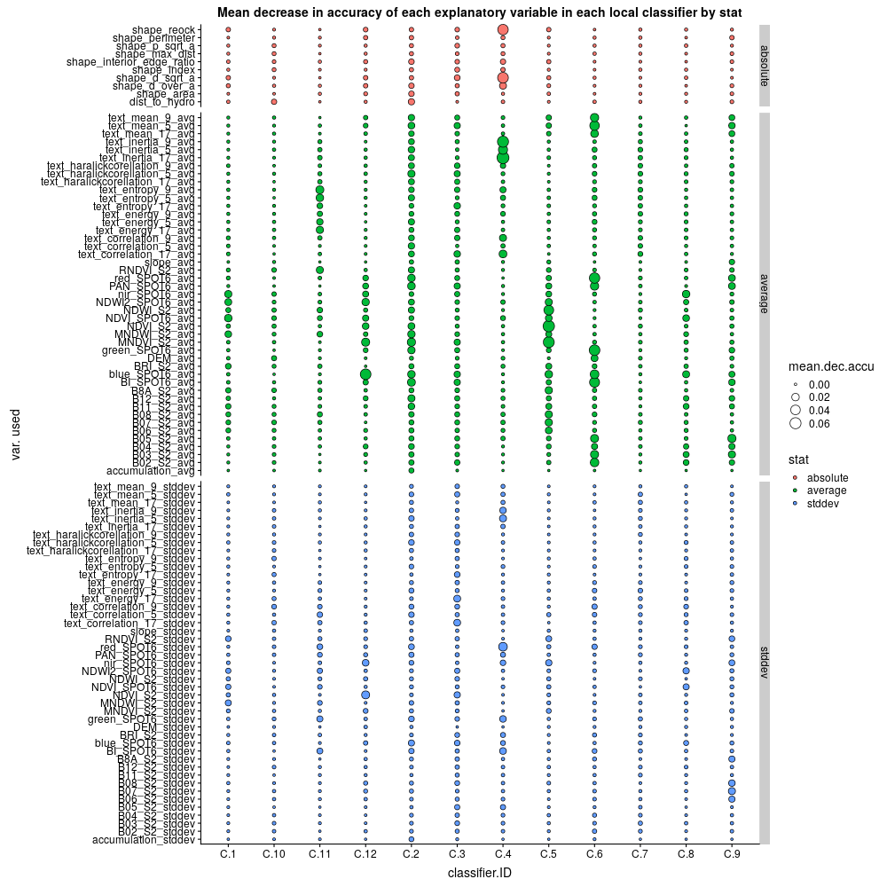
D’autres indicateurs pourront être étudiés grâce aux packages R https://arxiv.org/pdf/1501.07196.pdf et https://github.com/ModelOriented/randomForestExplainer :
Les résultats seront discutés : - quels sont les facteurs qui expliquent la présence et la densité agressive des 3 espèces vectrices majeures selon nos modèles, à comparer avec ce qu’on trouve dans la biblio. - discussion sur la capacité des modèles algorithmiques à analyser et expliquer nos variables (et pas seulement à les prédire)
Proportion des moustiques piquant en extérieur (uniquement les cas où au moins 1 moustique de l’espèce considérée a été capturé)
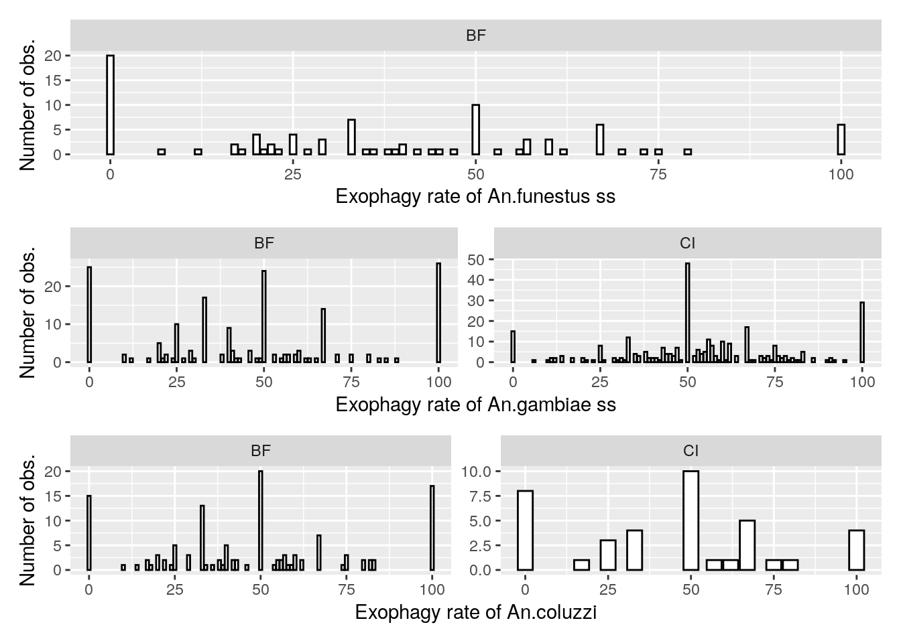
Si l’on étudie cette variable on pourrait faire 3 modèles : un pour le cas 0% exophagie, un pour le cas 100% exophagie, un pour le reste (au milieu). A noter cependant que les cas 0% et 100% arrivent la plupart du temps quand il n’y a que très peu de moustiques capturés… pas très représentatif donc. Ca vaudrait peut etre le coup d’élever le seuil du nombre minimal de moustiques capturé. Par ailleurs dans ce cas on aurait 1 seul modèle à générer.
L’extraction et le nettoyage de ces variables (dans un format idoine pour les analyses statistiques) a fait l’objet d’un important travail. Au regard du volume de données à traiter, l’optimisation des traitements joue un rôle non négligeable dans nos travaux - à tous les niveaux : extraction des données, pré-traitements, modélisation.
Au niveau de l’accès aux données, du nettoyage et des pré-traitements, le défi principal réside dans l’extraction de séries temporelles longues de données volumineuses (principalement des produits satellitaires) et leur manipulation pour en extraire l’information pertinente. Des outils tels que le Google Earth Engine facilitent potentiellement grandement ce travail : il s’agit d’un outil développé par Google, qui est à la fois un entrepôt de données satellitaires regroupant les principales sources de données satellites ouvertes, et d’un serveur de traitement de données qui permet d’écrire et executer des traitements utilisant ces produits sur les serveurs puissants de Google - au lieu de les effectuer en local sur un ordinateur personnel par exemple, ou de les envoyer sur un serveur de traitement universitaire. Cette solution est donc évidemment séduisante de premier abord, car toute personne ayant fait face à la diversité des sources de produits satellitaires et à la complexité de leur utilisation reconnaitra l’avantage d’un service qui harmonise l’accès à ces produits et d’un serveur de traitement puissant pour gérer ces produits volumineux. Cependant, cette solution présente aussi des inconvénients :
Ainsi, nous avons fait le choix de développer nos propres outils “maison” pour optimiser l’accès aux données, et d’utiliser uniquement des logiciels ou librairies à code source libre et ouvert pour le nettoyage et le traitement des données. Ce choix s’applique par ailleurs à tous les niveaux dans nos travaux.
Pour optimiser l’accès aux données sources (principalement produits satellitaires), nous avons développé 3 librairies R. Ces librairies permettent d’extraire des données depuis les différents serveurs source où elles sont stockées, en les filtrant (spatialement, temporellement et dimensionnellement) dès la phase de téléchargement. Ceci est rendu possible grâce à l’implémentation de protocoles web spécifiques d’accès aux données côté gestionnaire des données. Ainsi, avec ces packages, seule la donnée strictement nécéssaire est téléchargée. Cela réduit considérablement les temps et volumes de données téléchargées. Les librairies développées sont les suivantes :
Nous avons choisi de développer 3 librairies R (et non 1 seule) car les fournisseurs de données et protocoles d’accès aux données utilisés par chacun d’eux sont bien différents. Ainsi, à la fois pour l’implémentation et la maintenance des librairies il est plus logique de séparer les séparer. Cependant, il faut noter que ces librairies utilisent des vocabulaires communs, ce qui facilite leur utilisation conjointe au sein d’un workflow d’extraction de données.
La librairie opendapr a été documentée, testée, etc. et pourrait faire l’objet d’une publication sur le CRAN et / ou d’un article scientifique. Il s’agira cependant de modifier le nom (le nom actuel, opendapr, est trompeur en ce sens qu’il donne l’impression qu’il s’agit d’un client R générique pour manipuler le protocole d’accès OPeNDAP, ce qui n’est pas le cas dans les faits car la librairie est spécifique à certains serveurs OPeNDAP uniquement). Les deux autres librairies (shub4r et getremotedata) sont décrites uniquement en surface et en l’état, restent des librairies relativement personnelles implémentées pour les stricts besoins de notre étude.
Une 4ème librairie R (eodataflow) a été développée pour harmoniser certains éléments d’extraction et de nettoyage des données.
Finalement, un script permettant d’extraire et de préparer les variables explicatives / prédictives a été développé. Ce script R utilise, entre autres, les 4 librairies sus-mentionnées. Il est disponible à l’adresse suivante : https://github.com/ptaconet/phd/blob/master/r_scripts/data_preparation/workflow_extract_expl_var.Rmd . Moyennant
Au delà des aspects reproductible et réutilisable de ces codes (les données qu’ils proposent de télécharger sont souvent des données disponibles au niveau global), l’intérêt de leur développement réside en partie dans le fait qu’ils permettent d’automatiser l’extraction des données selon des dates et sites d’intérêts : ainsi, dans l’optique de la mise en place d’un système d’alerte précoce basé sur les modèles prédictifs qui seront développés, ils seront réutilisés pour automatiser la mise à jour des indicateurs spatio-temporels de risque de transmission du paludisme.
De nombreuses librairies R permettent ensuite d’optimiser le traitement et l’analyse des données.
Note : cette section ne fera pas partie de l’article. Ces travaux seront cependant intégrés dans le manuscrit de thèse.
La modélisation conceptuelle permet de décrire le système que l’on étudie, c’est-à-dire, les éléments importants qui composent notre système et les relations entre ces éléments. Ici le système que l’on étudie est “la transmission et le risque de transmission du paludisme en milieu rural ouest-africain”, et l’on cherche à i) identifier les éléments qui composent ce système et ii) les relations entre eux. C’est la bibliographie sur le sujet qui permet de mettre en place le modèle conceptuel.
En d’autres terme, les éléments du sytème seront nos variables à expliquer / prévoir et nos variables explicatives / prédictives. Tout le travail de modélisation mathématique consistera à quantifier les liens éventuels entre ces éléments.
L’idée ici est de représenter le modèle conceptuel via une série de graphes (potentiellement, 1 graphe par variable à expliquer / prévoir). En théorie des graphes, un système est représenté par des éléments (“nodes”) qui sont liés entre eux par des liens (“edges”). Ici, le système que l’on étudie est “la transmission et le risque de transmission du paludisme en milieu rural ouest-africain”, et principalement nous cherchons à décrire les liens hypothétiques (i.e. basés sur la bibliographique) entre nos variables à expliquer et nos variables explicatives.
Pour réaliser des graphes (avec des librairies R comme tidygraph ou ggraph), il faut 2 tableaux :
A noter que chaque noeud et lien peut avoir des propriétés, et qu’il est possible de representer graphiquement ensuite ces propriétés (par exemple, la largeur d’un lien reliant 2 noeuds peut être proportionnelle à la “force” liant ces noeuds : dans notre cas, cela pourrait être un coefficient de corrélation entre ces deux noeuds).
L’idée de ces graphes est donc double : - c’est un moyen graphique de représenter les éléments de notre système (variables à expliquer, variables explicatives) et les liens qui relient ces éléments entre eux ; - c’est aussi un moyen, une fois les modèles mathématiques univariés établis, de répresenter graphiquement l’effet et la significativité de l’effet entre 2 éléments du système.
Ces tableaux (noeuds et liens) sont en cours de constitution sur le classeur disponible à l’adresse suivante :
https://docs.google.com/spreadsheets/d/1s3VJ4M6BlQ6zkaVJiEE86n8hhYJfm4UBj9Gibn3YFQY/edit?usp=sharing
onglets “agents” et “relations”.
Quelques tests de graphes ont été effectués à partir de ce tableau (voir code https://github.com/ptaconet/phd/blob/master/r_scripts/temporary_miscellaneaous/tidy_graph.R ). Les graphes seront avancés à mesure que la modélisation et le plan d’analyse de données prendra forme.
Biblio (non ordonnée ici mais intégrée dans Zotero) :
Bias in Random Forest Variable Importance Measures: Illustrations, Sources and a Solution. https://www.researchgate.net/publication/6550243_Bias_in_Random_Forest_Variable_Importance_Measures_Illustrations_Sources_and_a_Solution_BMC_Bioinformatics_81_25 “As long as, e.g., only continuous predictor variables, as in most gene expression studies, or only variables with thesame number of categories are considered in the sample,variable selection with random forest variable importancemeasures is not affected by our findings” “the variable importancemeasures of Breiman’s original Random Forest method … are not reliable in situations wherepotential predictor variables vary in their scale of measurement or their number of categories.”
“There appears to be broad consenus that random forests rarely suffer from overfitting whichplagues many other models. (We define overfitting as choosing a model flexibility which istoo high for the data generating process at hand resulting in non-optimal performance on anindependent test set.) By averaging many (hundreds) of separately grown deep trees -eachof which inevitably overfits the data - one often achieves a favorable balance in the biasvariance tradeoff” (2) (PDF) Unbiased variable importance for random forests. Available from: https://www.researchgate.net/publication/339711057_Unbiased_variable_importance_for_random_forests [accessed Apr 21 2020].